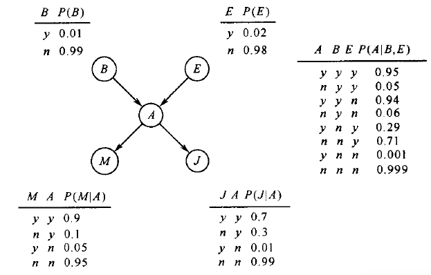
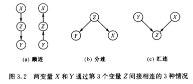
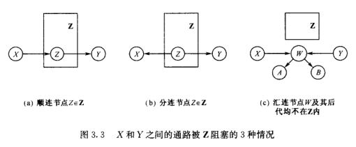

贝叶斯网
Table of Contents
概述
贝叶斯网: 一种帮助人们将概率统计应用于复杂领域, 进行不确定性推理和数值分析的工具. 它是概率论和图论结合的产物, 一方面用图论的语言直观揭示问题的结构, 另一方面用概率论的原则对问题结构加以利用.
贝叶斯网学习: 从数据出发, 获得贝叶斯网的过程.
不确定性推理与联合概率分布
不确定性推理是人工智能研究的重要课题之一。有概率方法、非单调逻辑、确定因子、DS证据理论、模糊逻辑等方法。
传统的使用概率方法进行不确定性推理
- 把问题用一组随机变量 \(X={X_1, X_2, \ldots, X_n}\) 来刻画
- 把关于问题的知识表示为一个联合概率分布 \(P(X)\)
- 按照概率论原则进行推理计算
例子
Pearl教授家住在洛杉矶，地震和盗窃时常发生，教授家里装有警铃，地震和盗窃都有可能触发警铃。听到警铃后，两个邻居Mary和John可能会打电话给他。一天，教授接到Mary的电话，问他家被盗窃的概率。
问题里包含5个变量：盗窃( \(B\) )、地震( \(E\) )、警铃响( \(A\) )、接到John的电话( \(J\) )和接到Mary的电话( \(M\) )；所有变量取值为 \(y\) 或 \(n\) 。这些变量间的关系存在不确定性：盗窃和地震以一定概率发生；它们发生后，以一定概率触发警铃；警铃响后，Mary和John只有一定概率听到。
要计算的是接到Mary的电话 \((M=y)\) 后，教授家被盗 \((B=y)\) 的信度（贝叶斯理论中的概率，与频率方法的概率，是不一样的），也就是计 \(P(B=y \mid M=y)\)
先计算边缘分布， \(P(B,M) = \sum_{E,A,J}P(B,E,A,J,M)\)
再根据条件概率，得 \(P(B=y \mid M=y) = \frac{P(B=y, M=y)}{P(M=y)} = \frac{P(B=y, M=y)}{P(B=y,M=y) + P(B=n,M=y)}\)
但是这种方法，复杂度较高，因为要计算边缘分布，首先要得到联合分布，而联合分布的计算复杂度极高，在上例中，只有5个二值随机变量，就包含 \(2^5-1=31\) 个独立参数。联合分布的复杂度相对于变量的个数，成指数增长。
条件独立与联合分布的分解
使用链规则，例子中的联合概率分布又可以表示为： \[P(B,E,A,J,M)=P(B)P(E \mid B)P(A \mid B,E)P(J \mid B,E,A)P(M \mid B,E,A,J)\]
虽然这一步并没有降低模型的复杂度，因为等式右端的5个概率分布，仍然包含同联合分布相同个数的独立参数： \(1+2+4+8+16=31\) 。但是根据问题的背景知识，做一些合理的独立假设，则可以降低复杂度。如假设 \(E\) 与 \(B\) 无关，则 \(P(E \mid B)=P(E)\) ，另外， \(M,J,B,E\) 都相互独立，因此，最后可得： \[P(B,E,A,J,M)=P(B)P(E)P(A \mid B,E)P(J \mid A)P(M \mid A)\]
这样，等式右端的概率分布仅包含 \(1+1+4+2+2=10\) 个独立参数。
使用条件独立降低复杂度
一个包含 \(n\) 个变量的联合分布 \(P(X_1, \ldots, X_n)\) ，可以根据链规则，写成： \[P(X_1, \ldots, X_n)=P(X_1)P(X_2 \mid X_1) \cdots P(X_n \mid X_1,X_2, \dots,X_{n-1})= \prod^{n}_{i=1}P(X_i \mid X_1, X_2, \cdots, X_{i-1})\]
对于任意 \(X_i\) ，如果存在 \(\pi(X_i) \subseteq {X_1, \cdots, X_{i-1}}\), 使得 \(X_i\) 与除 \(\pi(X_i)\) 之外的变量条件独立。即： \[P(X_i \mid X_1, \cdots, X_{i-1}) = P(X_i \mid \pi(X_i))\]
则有： \[P(X_1, \cdots, X_n) = \prod^{n}_{i-1}P(X_i \mid \pi(X_i))\]
这样，对于任意的 \(X_i\) ，\(\pi(X_i)\) 最多包含 \(m\) 个变量。如果所有变量取二值时，独立参数最多为 \(n2^m\) 个。因此，条件独立使模型得到了简化。
贝叶斯网的概念
构造有向图来表示变量之间的依赖和独立关系：
- 把每个变量都表示为一个节点
- 对于每个节点 \(X_i\) ，都从 \(\pi(X_i)\) 中的每个节点画一条有向边到 \(X_i\)
如警铃那个例子， \(A\) 依赖于 \(B,E\) ， \(M,J\) 依赖于 \(A\) 。构造的有向图如下所示：

Figure 1: Alarm贝叶斯网
贝叶斯网是一个有向无环图，其中节点代表随机变量，节点间的边代表变量之间的直接依赖关系。 每个节点都附有一个概率分布 。根节点所附的是边缘分布 \(P(X)\) ，非根节点所附的是条件概率分布 \(P(X \mid \pi(X))\) .如果把各变量所附的概率相乘，就得到联合分布。即： \[P(X_1, \cdots, X_n) = \prod^{n}_{i-1}P(X_i \mid \pi(X_i))\]
贝叶斯网的构造
确定网络结构
- 选定一组刻画问题的随机变量 \({X_1, X_2, \ldots, X_n}\)
- 选择一个变量顺序 \(\alpha = \langle X_1, X_2, \ldots, X_n \rangle\)
- 从一个空图出发, 按照顺序将 \(\alpha\) 逐个将变量加入 \(\delta\) 中
- 在加入变量 \(X_i\) 时, \(\delta\) 中的变量包括 \(X_1, X_2, \ldots, X_{i-1}\). 利用背景知识, 在这些变量中选择一个尽可能小的子集 \(\pi(X_i)\), 使得假设"给定 \(\pi(X_i)\), \(X_i\) 与 \(\delta\) 中的其他变量条件独立"合理; 从 \(\pi(X_i)\) 中的每一个节点添加一条指向 \(X_i\) 的有向边.
- 不同的变量顺序导致不同的网络结构, 不同的网络结构表示了联合分布的不同分解, 而不同的分解则意味着不同的复杂度
- 建议用因果关系来决定变量顺序, 原因在前, 结果在后
确定网络参数
贝叶斯网的参数就是各变量的概率分布。由于参数的确定一般依靠专家，耗费人力和时间，因此要尽量减少参数的个数。
如果变量 \(Y\) 有 \(m\) 个父节点 \(X_1, \cdots, X_m\) ，则 \(Y\) 对父节点的依赖关系为 \(P(Y \mid X_1, \cdots, X_m)\) 。当所有变量均取二值时，有 \(2^m\) 个独立参数。
减少参数个数的方法有因果机制独立和环境独立。
图分隔与变量独立
概述
贝叶斯网是概率论和图论相结合的产物. 可以从概率论的角度讨论变量间的依赖与独立, 也可以从图论的角度讨论节点间的连通与分隔, 这两者之间有着深刻的联系.
通过图论准则, 可以判别变量之间条件独立关系.
\(X\) 与 \(Y\) 不直接相连, 通过其他变量才 勇夺两者之间传递信息, 如果 \(X\) 与 \(Y\) 之间的所有信息通道都被阻塞, 则信息就无法继续传递.
图分隔与变量独立
变量 \(X\) 与 \(Y\) 通过第三个变量 \(Z\) 间接相连的三个情况:

阻塞
设 \(\mathbf{Z}\) 为节点集合, \(X\) 和 \(Y\) 是不在 \(\mathbf{Z}\) 中的两个节点, 考虑 \(X\) 和 \(Y\) 之间的一条通道 \(\alpha\), 如果满足以下任意一个条件, 则称 \(\alpha\) 被 \(\mathbf{Z}\) 阻塞:
- \(\alpha\) 上有一个在 \(\mathbf{Z}\) 中的顺连节点
- \(\alpha\) 上有一个在 \(\mathbf{Z}\) 中的分连节点
- \(\alpha\) 上有一个汇连节点 \(W\), 它和它的后代节点均不在 \(\mathbf{Z}\) 中

如果 \(X\) 和 \(Y\) 之间的所有通路都被 \(\mathbf{Z}\) 阻塞, 则我们称: \(\mathbf{Z}\) 有向分隔(directed separate) \(X\) 和 \(Y\), 简称 d-separate.
整体马尔科夫性: 设 \(X\) 和 \(Y\) 是贝叶斯网 \(\mathcal{N}\)